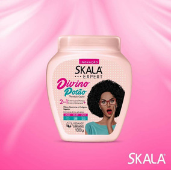

Skala Expert-Crema de peinar 2 en 1

Este producto es el tratamiento ideal para el pelo en transición y lo mejor es un producto liberado y vegano, controla el frizz, hidrata y moldea tus crespos.
Aqui encontrataras:
Este producto es el tratamiento ideal para el pelo en transición y lo mejor es un producto liberado y vegano, controla el frizz, hidrata y moldea tus crespos.